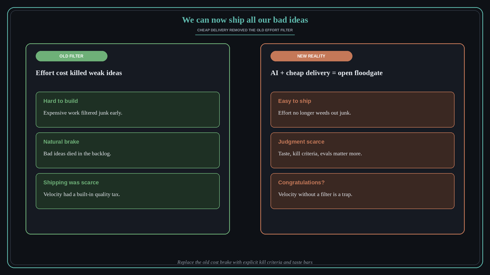

We can now ship all our bad ideas
Source: Claire Vo (@clairevo) via Lenny Rachitsky (@lennysan)
original post
What it claims
Claire Vo: “We can now ship all our bad ideas. Congratulations!” AI and cheap delivery removed the old natural filter where effort cost killed weak ideas before they shipped. When shipping is easy, judgment, taste, kill criteria, and evals become the scarce resource — not velocity.
Why it matters for a PO
As a PO you used to rely on “too expensive to build” as a silent quality gate. That gate is gone. Distinct from keeping judgment personally (lesson 258): here the economics changed — your backlog and release train need explicit kill criteria because effort no longer weeds out junk.
3 takeaways
- Cheap shipping removes the effort filter; bad ideas reach production faster.
- Invest in kill criteria, taste bars, and evals — they replace the old cost brake.
- Velocity without judgment is a congratulatory trap, not a win.
Practice this week
For your next three candidate bets, write a one-line kill criterion before build starts. If you cannot say what would make you stop, you are not ready to accelerate with AI.